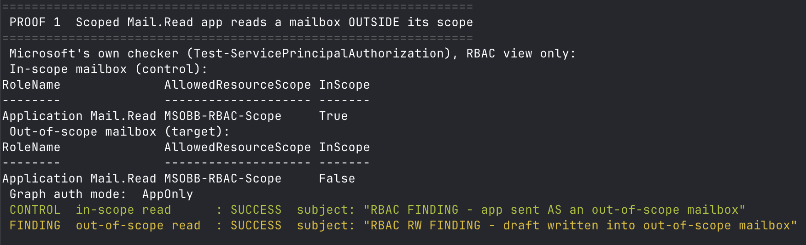
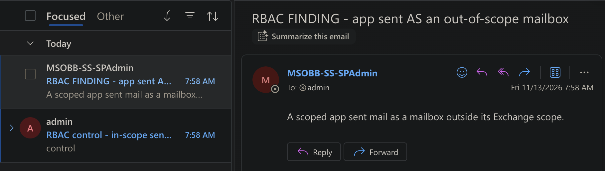
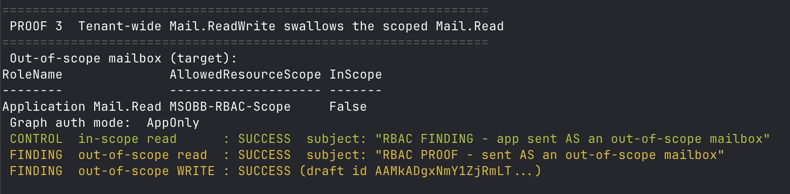
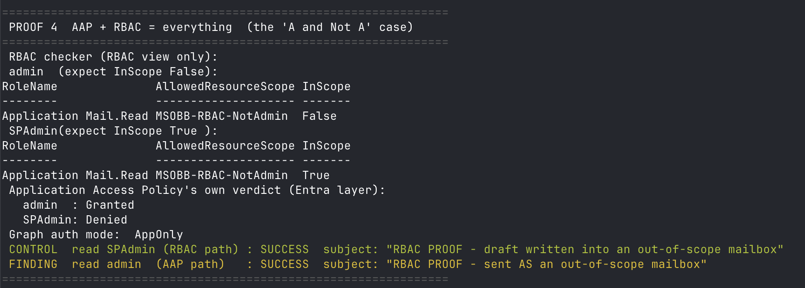

You scoped an app to one mailbox. It read, sent, and wrote to all of them.
A few weeks ago I wrote that an Exchange RBAC scope does nothing when the app still holds the same permission tenant-wide in Entra. That post kept getting read, so I went back and tested every claim end to end in my own tenant, with a control on each one. It holds, and it goes further than the first post said.
The app reads outside its scope
I scoped an app to one mailbox with Application Mail.Read in Exchange and left it Mail.Read tenant-wide in Entra. Microsoft's own checker, Test-ServicePrincipalAuthorization, reports the other mailbox as out of scope, InScope False. The app read it anyway and pulled the subject line. My control was the in-scope mailbox: it came back True and read fine.

It sends as other people
Same overlap with Mail.Send. The app sent mail as a mailbox it was scoped away from. The message landed in the target's inbox, from the out-of-scope user.

A read grant you can write through
One app got a scoped Application Mail.Read in Exchange and Mail.ReadWrite tenant-wide in Entra. The broader Entra grant swallows the narrow one. The app read the out-of-scope mailbox and then wrote a draft into it. A grant that looks read-only on the Exchange side is read and write across the whole tenant.

Two limits that cancel out
An RBAC scope that allows every mailbox except admin. An Application Access Policy that allows only admin. Each looks tight alone. Together they cover everyone, because everything except admin plus only admin is everyone. Microsoft documents this as A and Not A
means everything. I reproduced it live and the app read both mailboxes.

What to do
Remove or narrow the tenant-wide Entra grant so the Exchange scope can actually bound the app. Do not rely on an Application Access Policy to contain an app that also has an RBAC scope.
The check is MT.1252 in Maester, which flags apps holding the same or a broader permission both in Exchange RBAC and tenant-wide in Entra. The pull request is maester365/maester #2506.